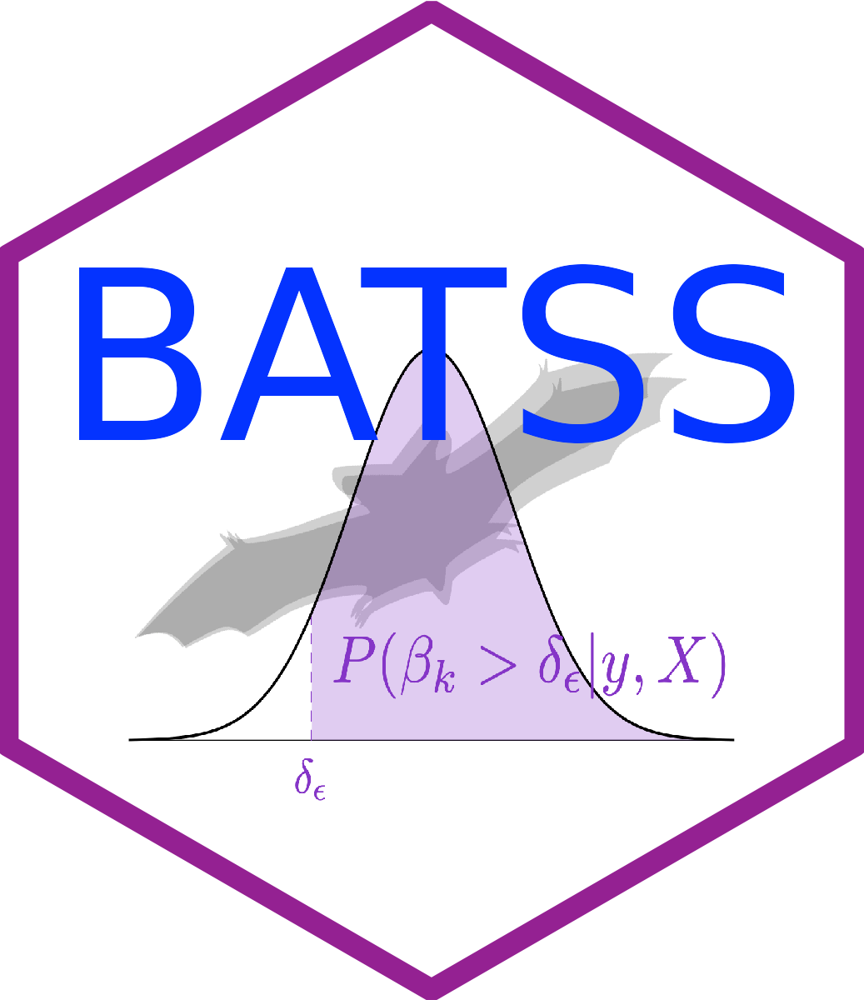

information-fraction based arm efficacy stop
eff.arm.infofract.Rdallows stopping an arm for efficacy at a given look when the probability of the corresponding target parameter being greater or smaller (depending on the argument 'alternative' of batss.glm) than delta.eff is greater than a function of the information fraction at that look.
Arguments
- posterior
the 'BATSS' ingredient '
posterior' corresponding, in this context, to the (posterior) probability of the target parameter being greater or smaller (depending on the argument'alternative'of batss.glm) than 'delta.eff'.- b
a tuning parameter (to be defined in
eff.arm.control).- n
the 'BATSS' ingredient '
n' corresponding to the vector of number of recruited participants per arm including the control group.- N
the 'BATSS' ingredient '`N' corresponding to the maximum (planned) sample size.
- p
a tuning parameter (to be defined in
eff.arm.control).